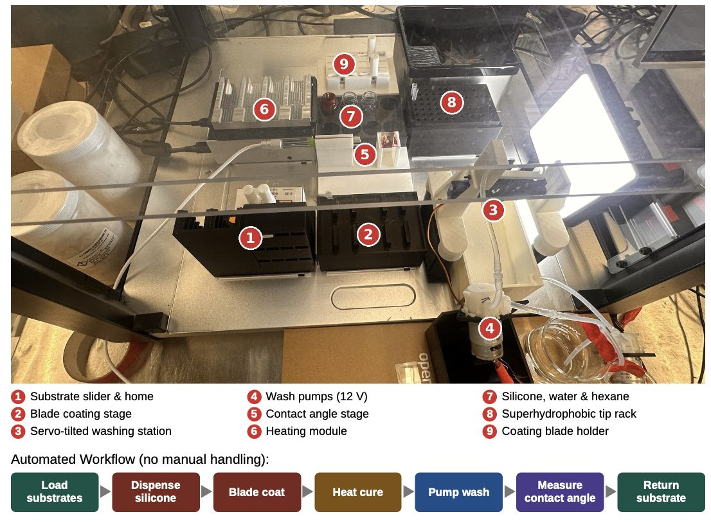
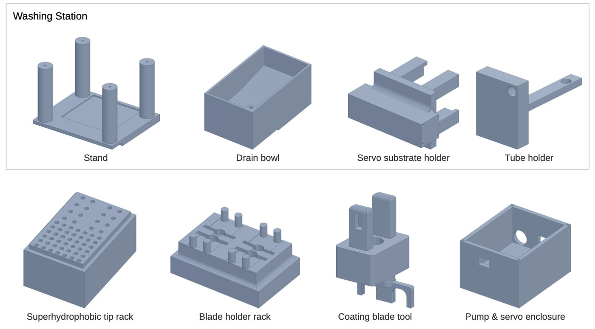
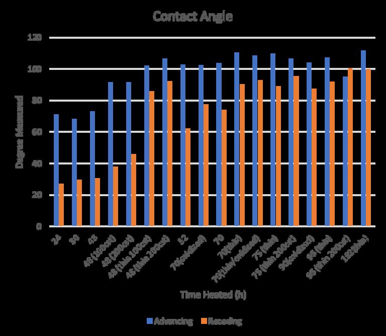

Research · DREAM Laboratory, Prof. Kevin Golovin · May–Aug 2026
Self-driving lab: automated coating platform
Problem
Coating, curing, washing and measuring the contact angle of PDMS substrates was done by hand. That made it slow and hard to repeat. RAISE needed it to run end-to-end with no manual handling.
What I built
- Designed and 3D-printed 11 custom components in Onshape, including a servo-tilted washing station, a blade-coating stage and a superhydrophobic tip rack.
- Wrote the Python automation stack, repurposing the pipette mount as a robotic gripper to move substrates around the deck.
- Controlled Arduino-driven pumps and servos over serial from the OT-2 protocol.
- Full workflow: load → dispense silicone → blade coat → heat cure → pump wash → measure contact angle → return.
25automated coating experiments run
−52%contact angle hysteresis with thinner substrates
+59%receding contact angle with thinner substrates
0manual handling steps in the loop
Demo · real hardware
The OT-2 running the coating workflow hands-free
The pipette mount works as a gripper, moving the substrate between the custom stations while Arduino-driven pumps and servos handle washing. Shown at 3× speed.


